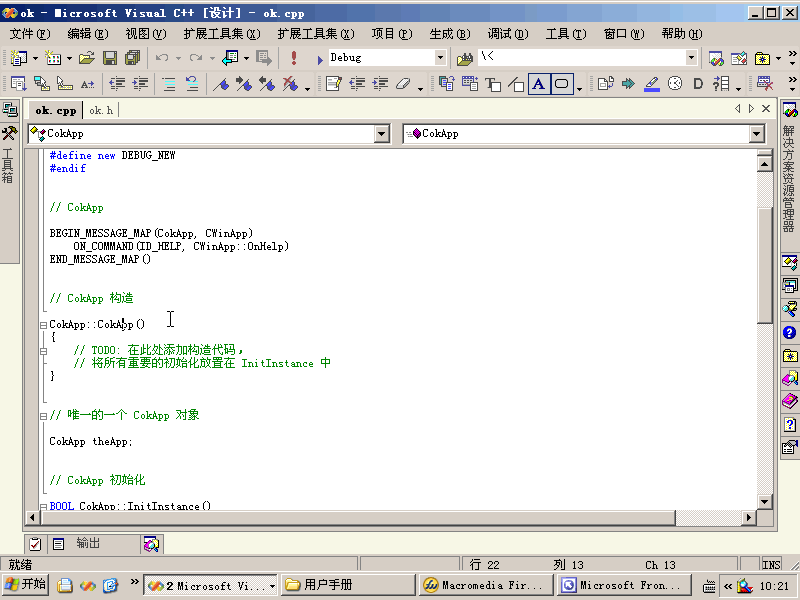
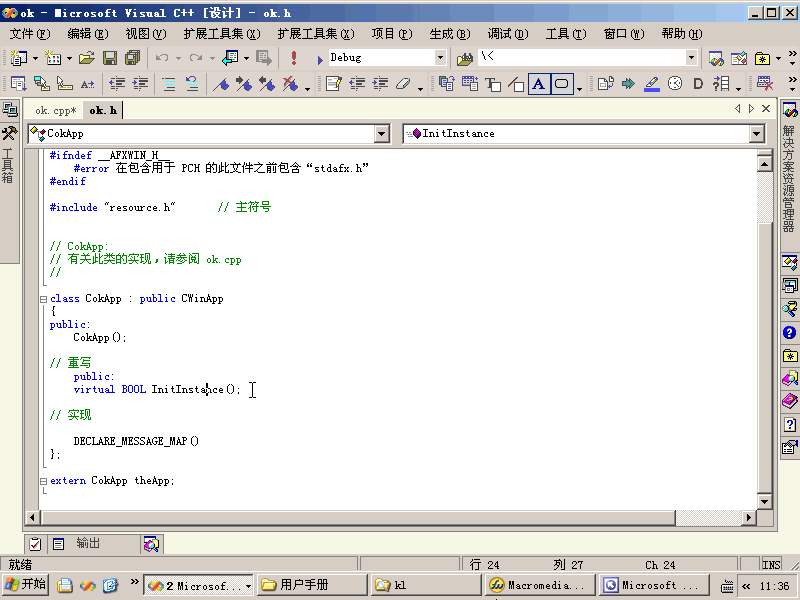
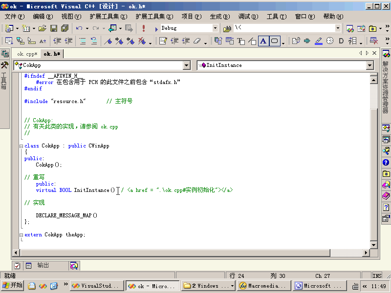

|
超链接、书签
功能：能够在代码中插入超链接和书签，便于查找相关的文档。
注意的问题：
- 超链接和书签都是建立在行尾，每一行只能建立一个超链接和书签。
- 此超链接只参用于代码文件，如果要超链接到 HTML 则只能链接到此文件，可能不查找它的书签。
包括三个命令：
- 插入书签：VisualStudioNetExtendTools.Connect.CreateBookMark
| 使用： 把光标定位到要插入书签的行，执行此命令。
动画演试：
 |
- 插入超链接：VisualStudioNetExtendTools.Connect.CreateHyperlink
| 使用：把光标放在要插入超链接的行，执行此命令。 动画演试：
 |
- 跳到超链接：VisualStudioNetExtendTools.Connect.GoHyperlink
-
| 使用： 把光标放到要跳转的超链接所在的行，再执行此命令。
动画演试：
 |
下一步 |